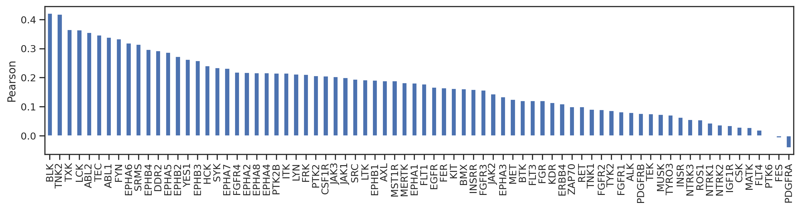
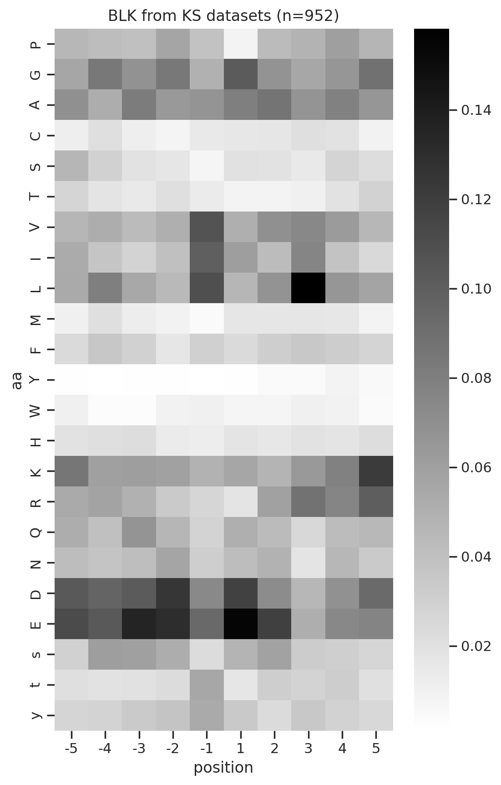
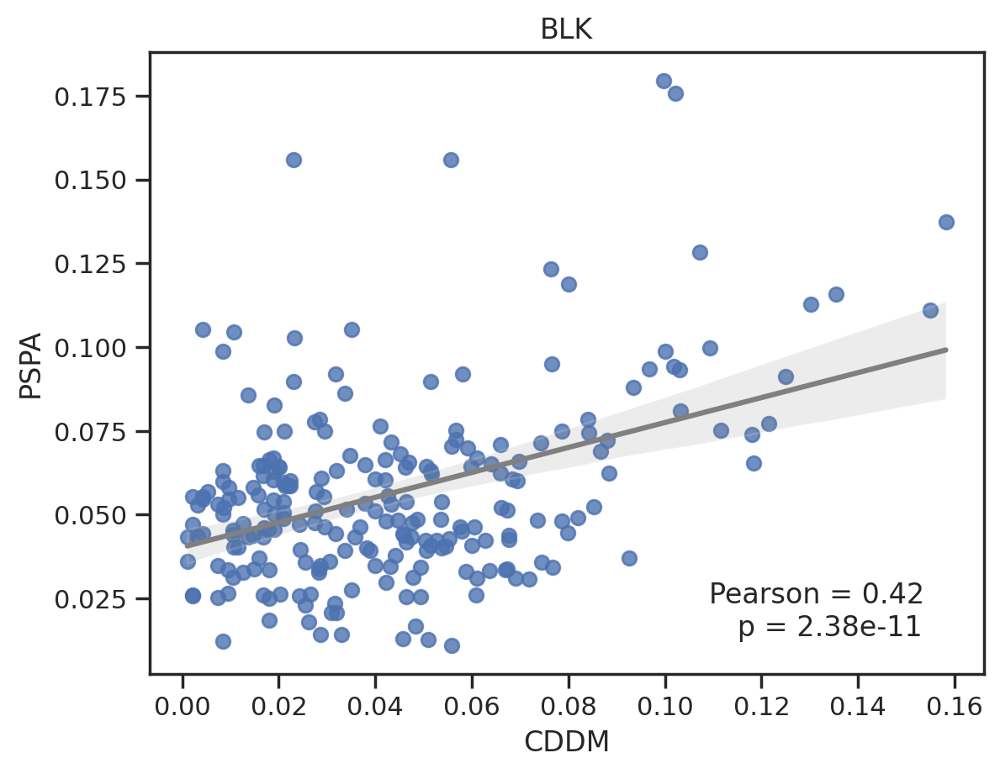
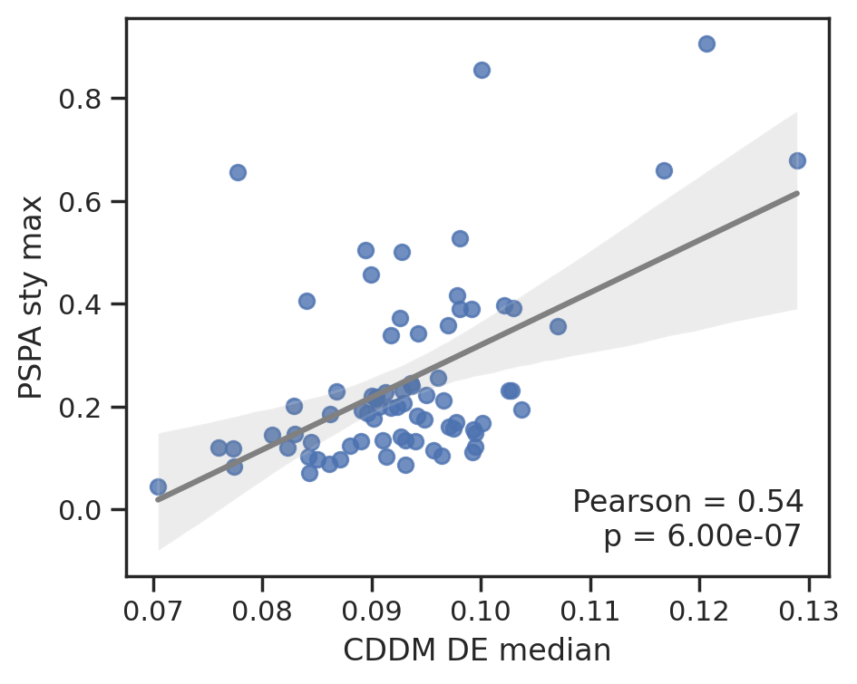
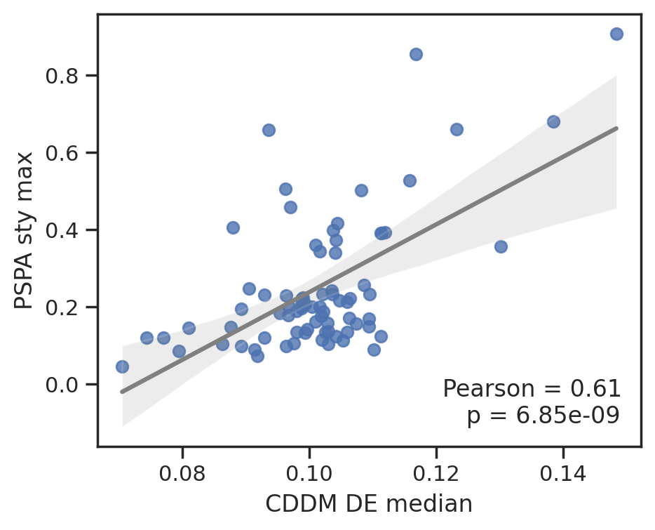
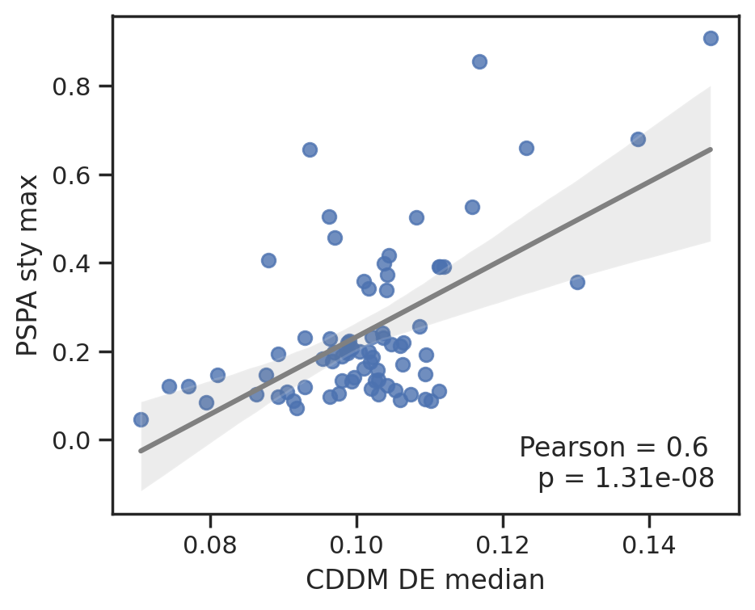
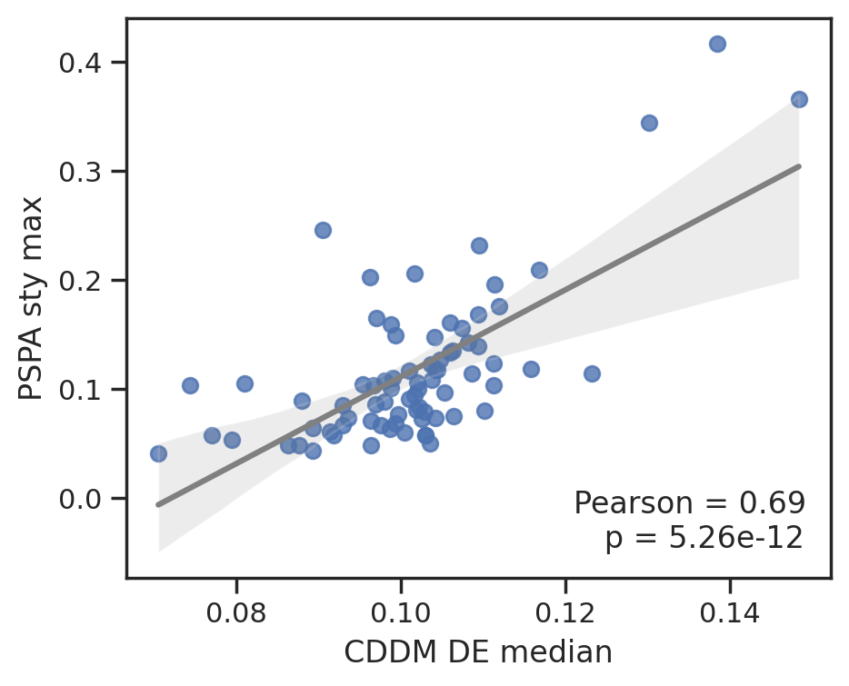
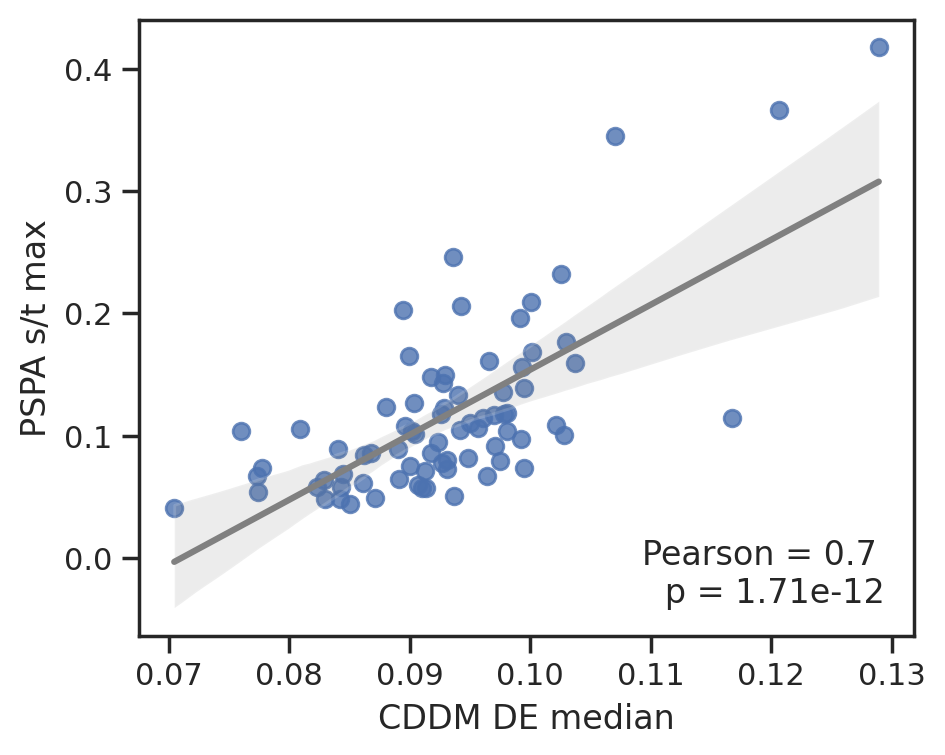
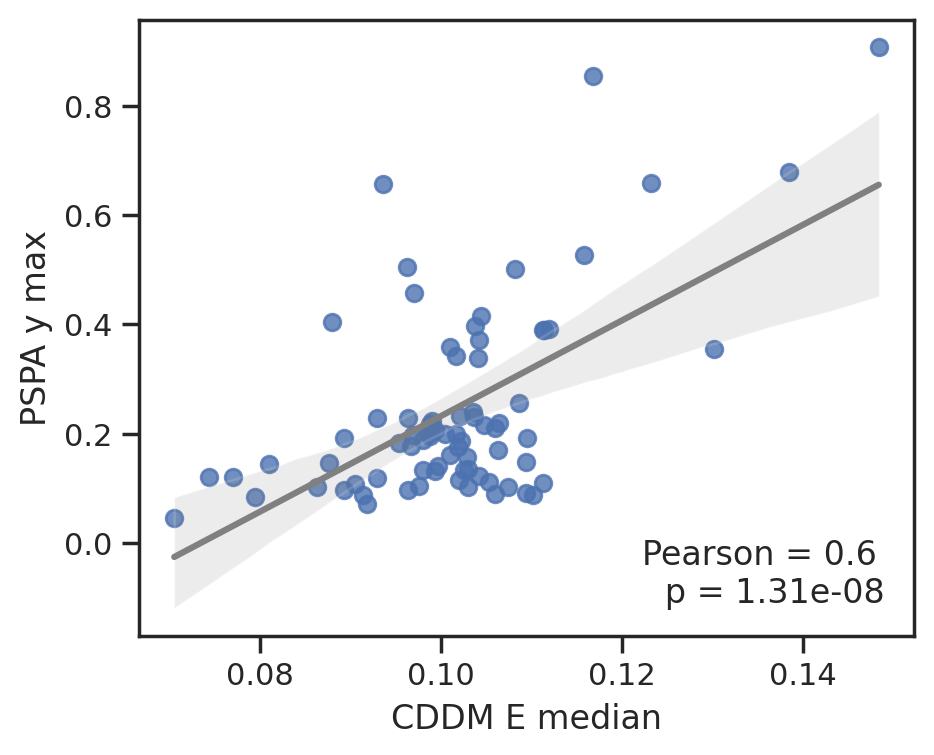
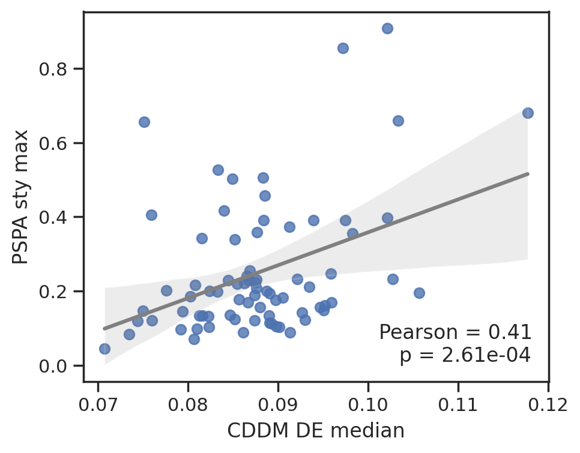

from katlas.core import *
import pandas as pd,seaborn as snsCompare CDDM and PSPA in Tyr kinase
Load CDDM
cddm = Data.get_cddm()cddm = cddm.iloc[:,:-6]Load PSPA
pspa = Data.get_pspa_tyr_norm().iloc[:,:-6]Match PSPA index to CDDM
pspa_info = pd.read_csv('raw/lew_tyr_info.csv')pspa| -5P | -5G | -5A | -5C | -5S | -5T | -5V | -5I | -5L | -5M | ... | 5H | 5K | 5R | 5Q | 5N | 5D | 5E | 5s | 5t | 5y | |
|---|---|---|---|---|---|---|---|---|---|---|---|---|---|---|---|---|---|---|---|---|---|
| kinase | |||||||||||||||||||||
| ABL1 | 0.0668 | 0.0689 | 0.0646 | 0.0520 | 0.0564 | 0.0539 | 0.0485 | 0.0448 | 0.0520 | 0.0536 | ... | 0.0613 | 0.0652 | 0.0756 | 0.0526 | 0.0512 | 0.0362 | 0.0339 | 0.0254 | 0.0254 | 0.0337 |
| TNK2 | 0.0679 | 0.0818 | 0.0627 | 0.0617 | 0.0529 | 0.0528 | 0.0419 | 0.0463 | 0.0437 | 0.0453 | ... | 0.0499 | 0.0385 | 0.0302 | 0.0531 | 0.0465 | 0.0630 | 0.0572 | 0.0364 | 0.0364 | 0.0572 |
| ALK | 0.0675 | 0.0640 | 0.0590 | 0.0511 | 0.0476 | 0.0422 | 0.0455 | 0.0514 | 0.0546 | 0.0543 | ... | 0.0448 | 0.0367 | 0.0489 | 0.0334 | 0.0387 | 0.0245 | 0.0226 | 0.0181 | 0.0181 | 0.0172 |
| ABL2 | 0.0687 | 0.0715 | 0.0611 | 0.0448 | 0.0537 | 0.0513 | 0.0467 | 0.0398 | 0.0462 | 0.0505 | ... | 0.0566 | 0.0640 | 0.0779 | 0.0538 | 0.0565 | 0.0378 | 0.0381 | 0.0252 | 0.0252 | 0.0289 |
| AXL | 0.0656 | 0.0753 | 0.0535 | 0.0525 | 0.0468 | 0.0467 | 0.0459 | 0.0538 | 0.0507 | 0.0542 | ... | 0.0441 | 0.0506 | 0.0355 | 0.0635 | 0.0696 | 0.0592 | 0.0559 | 0.0413 | 0.0413 | 0.0455 |
| ... | ... | ... | ... | ... | ... | ... | ... | ... | ... | ... | ... | ... | ... | ... | ... | ... | ... | ... | ... | ... | ... |
| KDR | 0.0634 | 0.0672 | 0.0556 | 0.0517 | 0.0541 | 0.0526 | 0.0427 | 0.0420 | 0.0428 | 0.0476 | ... | 0.0543 | 0.0653 | 0.0771 | 0.0509 | 0.0582 | 0.0414 | 0.0387 | 0.0335 | 0.0335 | 0.0406 |
| FLT4 | 0.0457 | 0.0531 | 0.0488 | 0.0553 | 0.0512 | 0.0471 | 0.0432 | 0.0499 | 0.0474 | 0.0530 | ... | 0.0624 | 0.0564 | 0.0559 | 0.0537 | 0.0610 | 0.0620 | 0.0528 | 0.0600 | 0.0600 | 0.0464 |
| WEE1_TYR | 0.0531 | 0.0640 | 0.0559 | 0.0560 | 0.0433 | 0.0435 | 0.0568 | 0.0571 | 0.0637 | 0.0562 | ... | 0.0585 | 0.1058 | 0.1658 | 0.0447 | 0.0495 | 0.0312 | 0.0365 | 0.0453 | 0.0453 | 0.0490 |
| YES1 | 0.0677 | 0.0571 | 0.0537 | 0.0530 | 0.0527 | 0.0505 | 0.0435 | 0.0375 | 0.0400 | 0.0463 | ... | 0.0593 | 0.0662 | 0.0840 | 0.0559 | 0.0604 | 0.0422 | 0.0482 | 0.0374 | 0.0374 | 0.0411 |
| ZAP70 | 0.0602 | 0.0880 | 0.0623 | 0.0496 | 0.0471 | 0.0514 | 0.0465 | 0.0380 | 0.0307 | 0.0526 | ... | 0.0484 | 0.0477 | 0.0290 | 0.0520 | 0.0537 | 0.0709 | 0.0710 | 0.0862 | 0.0862 | 0.0605 |
93 rows × 230 columns
Get overlapped kinase
# non-overlapped
pspa.index[~pspa.index.isin(cddm.index)]Index(['BMPR2_TYR', 'DDR1', 'ERBB2', 'LIMK1_TYR', 'LIMK2_TYR', 'MAP2K4_TYR',
'MAP2K6_TYR', 'MAP2K7_TYR', 'PKMYT1_TYR', 'NEK10_TYR', 'PDHK1_TYR',
'PDHK3_TYR', 'PDHK4_TYR', 'PINK1_TYR', 'TESK1_TYR', 'TNNI3K_TYR',
'WEE1_TYR'],
dtype='object', name='kinase')overlap_kinase = pspa.index[pspa.index.isin(cddm.index)]
overlap_kinaseIndex(['ABL1', 'TNK2', 'ALK', 'ABL2', 'AXL', 'BLK', 'PTK6', 'BTK', 'CSF1R',
'CSK', 'MATK', 'DDR2', 'EGFR', 'EPHA1', 'EPHA2', 'EPHA3', 'EPHA4',
'EPHA5', 'EPHA6', 'EPHA7', 'EPHA8', 'EPHB1', 'EPHB2', 'EPHB3', 'EPHB4',
'BMX', 'PTK2', 'FER', 'FES', 'FGFR1', 'FGFR2', 'FGFR3', 'FGFR4', 'FGR',
'FLT3', 'FRK', 'FYN', 'HCK', 'ERBB4', 'IGF1R', 'INSR', 'INSRR', 'ITK',
'JAK1', 'JAK2', 'JAK3', 'KIT', 'LCK', 'LTK', 'LYN', 'MERTK', 'MET',
'MST1R', 'MUSK', 'PDGFRA', 'PDGFRB', 'PTK2B', 'RET', 'ROS1', 'SRC',
'SRMS', 'SYK', 'TEC', 'TEK', 'TNK1', 'NTRK1', 'NTRK2', 'NTRK3', 'TXK',
'TYK2', 'TYRO3', 'FLT1', 'KDR', 'FLT4', 'YES1', 'ZAP70'],
dtype='object', name='kinase')overlap_column = pspa.columnspspa = pspa.loc[overlap_kinase,overlap_column]cddm = cddm.loc[overlap_kinase,overlap_column]Pearson
from matplotlib import pyplot as pltd = pspa.corrwith(cddm,axis=1).sort_values(ascending=False)pspa.corrwith(cddm,axis=1).sort_values(ascending=False)kinase
BLK 0.422068
TNK2 0.418332
TXK 0.366034
LCK 0.364885
ABL2 0.355762
...
MATK 0.028732
FLT4 0.020456
PTK6 -0.001976
FES -0.006169
PDGFRA -0.040095
Length: 76, dtype: float64sns.set(rc={"figure.dpi":200, 'savefig.dpi':200})
sns.set_context('notebook')
sns.set_style("ticks")
pspa.corrwith(cddm,axis=1).sort_values(ascending=False).plot.bar(figsize=(15,3))
plt.xlabel('')
plt.ylabel('Pearson');
Compare PSSM heatmaps
from matplotlib import pyplot as plt
from katlas.plot import *
import os, seaborn as sns
from tqdm import tqdm
from PIL import Imagedef plot_kinase(df,kinase, title, fname=None, aa_order_paper = [i for i in 'PGACSTVILMFYWHKRQNDEsty']):
# get PSSM matrix
m = get_one_kinase(df, kinase, drop_s = False).T.loc[aa_order_paper]
# plot heatmap
plot_heatmap(m,title=title)
plt.savefig(fname,bbox_inches='tight', pad_inches=0.05) if fname else plt.show()
plt.close()def plot_cor(k,title, fname=None):
# plot
plot_corr(cddm.loc[k],pspa.loc[k],'CDDM','PSPA')
plt.title(title)
plt.savefig(fname,bbox_inches='tight', pad_inches=0.2) if fname else plt.show()
plt.close()kinase_order = pspa.corrwith(cddm,axis=1).sort_values(ascending=False).indexkinase_orderIndex(['BLK', 'TNK2', 'TXK', 'LCK', 'ABL2', 'TEC', 'ABL1', 'FYN', 'EPHA6',
'SRMS', 'EPHB4', 'DDR2', 'EPHA5', 'EPHB2', 'YES1', 'EPHB3', 'HCK',
'SYK', 'EPHA7', 'FGFR4', 'EPHA2', 'EPHA8', 'EPHA4', 'PTK2B', 'ITK',
'LYN', 'FRK', 'PTK2', 'CSF1R', 'JAK3', 'JAK1', 'SRC', 'LTK', 'EPHB1',
'AXL', 'MST1R', 'MERTK', 'EPHA1', 'FLT1', 'EGFR', 'FER', 'KIT', 'BMX',
'INSRR', 'FGFR3', 'JAK2', 'EPHA3', 'MET', 'BTK', 'FLT3', 'FGR', 'KDR',
'ERBB4', 'ZAP70', 'RET', 'TNK1', 'FGFR2', 'TYK2', 'FGFR1', 'ALK',
'PDGFRB', 'TEK', 'MUSK', 'TYRO3', 'INSR', 'NTRK3', 'ROS1', 'NTRK1',
'NTRK2', 'IGF1R', 'CSK', 'MATK', 'FLT4', 'PTK6', 'FES', 'PDGFRA'],
dtype='object', name='kinase')# get count of KS pairs in CDDM
df = Data.get_ks_dataset()
# Convert substrate names to uppercase
df['SUB'] = df['substrate'].str.upper()
# Remove duplicates based on kinase and substrate
df_unique = df.drop_duplicates(subset=['kinase_paper', 'SUB'])
# Count unique substrates for each kinase
cnt_unique = df_unique.groupby('kinase_paper').size()# Count number of substrates (with duplicates) for each kinase
cnt_general = df.kinase_paper.value_counts()Uncheck below to run all
for k in tqdm(kinase_order):
# print('CDDM')
plot_kinase(cddm,k,title= f'{k} from KS datasets (n={cnt_unique[k]})')
# print('PSPA')
plot_kinase(pspa,k, title = f'{k} from PSPA')
plot_cor(k,title = k)
break 0%| | 0/76 [00:00<?, ?it/s]


0%| | 0/76 [00:00<?, ?it/s]To save, uncomment below
# for k in tqdm(kinase_order):
# # print('CDDM')
# plot_kinase(cddm,k,title= f'{k} from KS datasets (n={cnt_unique[k]})', fname=f'corr_tyr/CDDM/{k}.png')
# # print('PSPA')
# plot_kinase(pspa,k, title = f'{k} from PSPA', fname=f'corr_tyr/PSPA/{k}.png')
# plot_cor(k,title = k, fname=f'corr_tyr/pear/{k}.png')
# # breakCombine images
def combine_images_custom_layout(image_paths, output_path):
images = [Image.open(image_path).convert('RGBA') for image_path in image_paths]
# Calculate total width and height for the new image
total_width = max(images[0].width, images[1].width + images[2].width)
total_height = images[0].height + max(images[1].height, images[2].height)
# Create a new image with calculated dimensions
combined_image = Image.new('RGBA', (total_width, total_height))
# Paste the first image at the top-center
x_offset = (total_width - images[0].width) // 2
combined_image.paste(images[0], (x_offset, 0), images[0])
# Paste the second image at the bottom-left
combined_image.paste(images[1], (0, images[0].height), images[1])
# Paste the third image at the bottom-right
combined_image.paste(images[2], (images[1].width, images[0].height), images[2])
# Save the result
combined_image.save(output_path)Uncomment below to save combined figure for pdf
# folders = ["corr_tyr/pear",'corr_tyr/CDDM','corr_tyr/PSPA']
# for k in tqdm(kinase_order,total=len(kinase_order)):
# filename = f"{k}.png"
# image_paths = [os.path.join(folder, filename) for folder in folders]
# output_path = f"corr_tyr/combine/{k}.png"
# combine_images_custom_layout(image_paths, output_path)
# # breakConvert images to pdf
Correlation of amino acids DE and phospho-S/T/Y
import pandas as pd
from katlas.core import *
from katlas.plot import *
import seaborn as sns
from matplotlib import pyplot as pltcddm = Data.get_cddm()
pspa= Data.get_pspa_tyr_norm().iloc[:,:-6]# remove dual
pspa = pspa[pspa.index.str.split('_').str.len() ==1]
overlap_kinase = cddm.index.intersection(pspa.index)overlap_columns=pspa.columnspspa = pspa.loc[overlap_kinase,overlap_columns]
cddm = cddm.loc[overlap_kinase,overlap_columns]
D = cddm.columns[cddm.columns.str.contains('D')].tolist()
E = cddm.columns[cddm.columns.str.contains('E')].tolist()
DE = D+E
cddm[DE].max(1)
s = cddm.columns[cddm.columns.str.contains('s')].tolist()
t = cddm.columns[cddm.columns.str.contains('t')].tolist()
y = cddm.columns[cddm.columns.str.contains('y')].tolist()
sty = s+t+ysns.set(rc={"figure.dpi":200, 'savefig.dpi':200})
sns.set_context('notebook')
sns.set_style("ticks")
plt.figure(figsize=(5,4))
plot_corr(cddm[DE].median(1), pspa[sty].max(1),'CDDM DE median', 'PSPA sty max')
plt.figure(figsize=(5,4))
plot_corr(cddm[E].median(1), pspa[sty].max(1),'CDDM DE median', 'PSPA sty max')
plt.figure(figsize=(5,4))
plot_corr(cddm[E].median(1), pspa[y].max(1),'CDDM DE median', 'PSPA sty max')
plt.figure(figsize=(5,4))
plot_corr(cddm[E].median(1), pspa[s].max(1),'CDDM DE median', 'PSPA sty max')
plt.figure(figsize=(5,4))
plot_corr(cddm[DE].median(1), pspa[t].max(1),'CDDM DE median', 'PSPA s/t max')
plt.figure(figsize=(5,4))
plot_corr(cddm[E].median(1), pspa[y].max(1),'CDDM E median', 'PSPA y max')
plt.figure(figsize=(5,4))
plot_corr(cddm[D].median(1), pspa[sty].max(1),'CDDM DE median', 'PSPA sty max')






To save data, uncheck below
# data_list = [cddm[DE].median(1),
# cddm[D].median(1),
# cddm[E].median(1),
# pspa[t].max(1),
# pspa[y].max(1)]
# d = pd.concat(data_list,axis=1)
# d.columns=['CDDM_DE_median','CDDM_D_median','CDDM_E_median',
# 'PSPA_t_max','PSPA_y_max']
# d.to_csv('source/Fig4CD.csv')